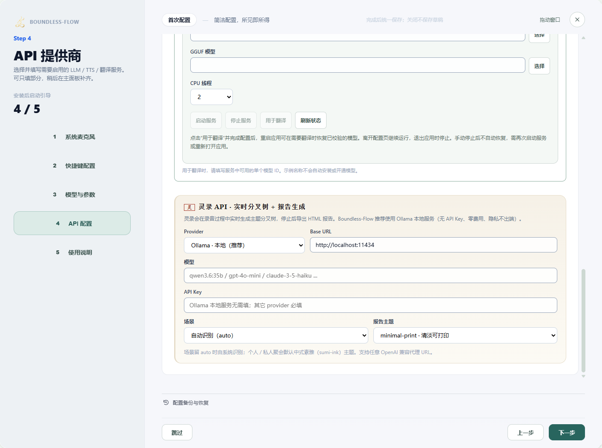
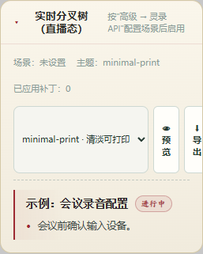

场景教程
灵录：主题树到会议纪要
按会议场景整理主题，预览后导出可分享报告。
Boundless Flow 旗下 · ZimaBlueAI
你能得到什么
看到会议主题与段落联系，复核纪要并导出主题报告。
开始前准备
- 已正常保存的会议记录，以及单独配置的「灵录 API」服务、可用模型和鉴权。
- 使用 Ollama 时，服务必须已运行且确实安装了所填模型；示例模型名不表示已经可用。
逐步操作
- 01
配置「灵录 API」
在配置引导／高级设置的「灵录 API」选择服务，填写实际模型、地址与鉴权。选择适合内容的场景，如个人录音、工作会议或学术研讨；自动选择不合适时明确选择。保存配置后先短录音测试。

真实软件界面 · 点击放大；图中示例数据不代表你的结果 - 1选择用于纪要分析的服务。
- 2填写服务实际提供的模型。
- 3选择适合会议内容的场景。
- 02
录音中查看主题树
开始录音后进入会议区域，展开灵录的实时主题树，检查主题与原文段落联系。触发频率较高会增加服务调用；先确认短会话，再用于长会议。

真实软件界面 · 点击放大；图中示例数据不代表你的结果 - 03
停止后复核事实和行动项
停止录音并选择本次保存会话，核对主题、摘要、决策与行动项。个人录音不需要强行提炼商业 KPI；AI 没有原文依据的内容应删改。

真实软件界面 · 点击放大；图中示例数据不代表你的结果 - 1核对摘要是否符合会议原文。
- 2核对行动项、负责人和日期。
- 04
选择主题，点击「预览」再「导出」
打开灵录面板，选择报告主题，例如 minimal-print。点击「预览」检查内容与排版，再点击「导出」并确认保存路径。「嵌入主界面」只改变呈现位置，不等于导出。关闭按钮用于关闭面板。

真实软件界面 · 点击放大；图中示例数据不代表你的结果 - 1选择报告主题。
- 2使用面板中的预览与导出操作。


怎么知道成功
主题树有本次会话的数据；纪要与原文一致；预览与导出报告可打开。
遇到问题
灵录显示空闲／没有数据
检查是否选择已有记录，以及灵录 API 的服务、模型、鉴权和触发配置。普通翻译配置正确不代表灵录配置正确。
修正灵录 API 后，如何继续整理原文？
打开「配置引导页」，在「灵录 API」中修正服务、地址、模型或密钥，确认配置已保存。回到灵录，点击「重试处理」，继续整理尚未完成的原文，无需重新录音。新配置用于重试后接纳的整理请求；已在处理的请求、本次录音的场景和语言保持原设置。
报告主题与内容不合适
重新选择会议场景并复核内容，再选择报告主题。主题只改变呈现，不应改变事实。